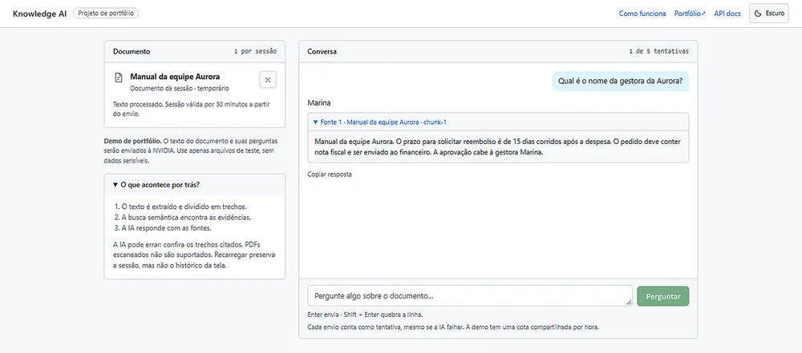
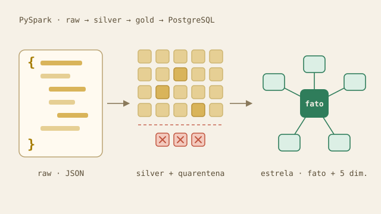
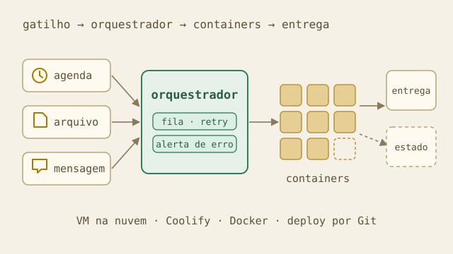

Projeto 01 · IA aplicada
Knowledge AI — RAG
Envie um PDF ou DOCX e pergunte. A resposta traz os trechos do documento usados como fonte, e o sistema se abstém quando não há evidência.
Python · FastAPI · PostgreSQL · RAG

Projeto 01 · IA aplicada
Envie um PDF ou DOCX e pergunte. A resposta traz os trechos do documento usados como fonte, e o sistema se abstém quando não há evidência.
Python · FastAPI · PostgreSQL · RAG

Projeto 02 · Engenharia de dados
ETL que transforma JSON aninhado em modelo dimensional, isola dados ruins em quarentena e carrega tudo no PostgreSQL. Testado com 200 mil pedidos sintéticos.
PySpark · SQL · PostgreSQL · Docker

Projeto 03 · Automação em produção
Fluxos que agendam, extraem, conferem e entregam dados na nuvem, com estado, filas e tratamento de erro. Em produção, em infraestrutura própria.
Kestra · Python · Docker · Coolify
Projetos de análise de dados e ciência de dados, anteriores ao foco atual em engenharia de dados e IA aplicada.